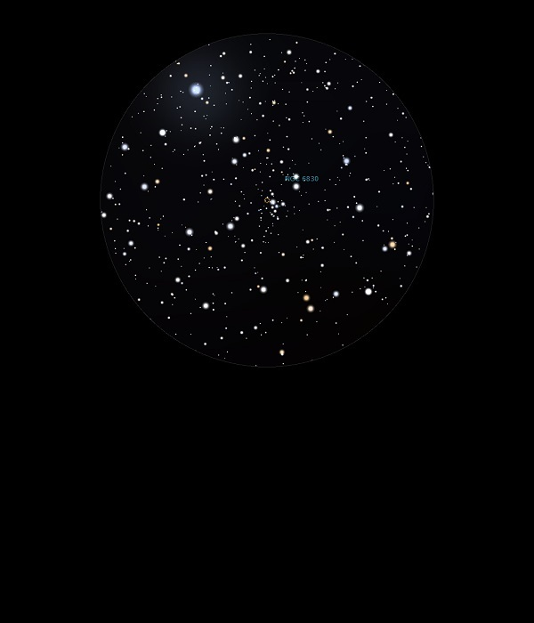

NGC 6830
Open Cluster in Vulpecula
NGC 6830
Mag 7.9
07/07/13
Small
and compact. Half a dozen or so bright stars forming a cross
shape at centre
04/09/13
Almost
Globular Cluster like, forms the 'belly' of a stick man
pointing at 12 Vul
09/07/15
A rather nice and tight Open Cluster of perhaps a dozen stars
which sits along the base of a triangle with12 Vul, V0395 Vul,
HIP97679 at it's top and stars of Mags 8.80 and 9.25 at it's
base, fitting neatly into the FOV in 18mm
31/08/16
Sparse and rather uninspiring Open Cluster, located by star
hopping using 25mm eyepiece from M27, The Dumbbell Nebula
Better viewed in 25mm rather than 12mm since in the former it
is more sharply defined, with 12 Vul, VO 395 Vul, HIP 97679 at
Mag 4.90 at the edge of the FOV